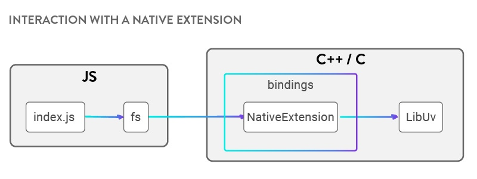
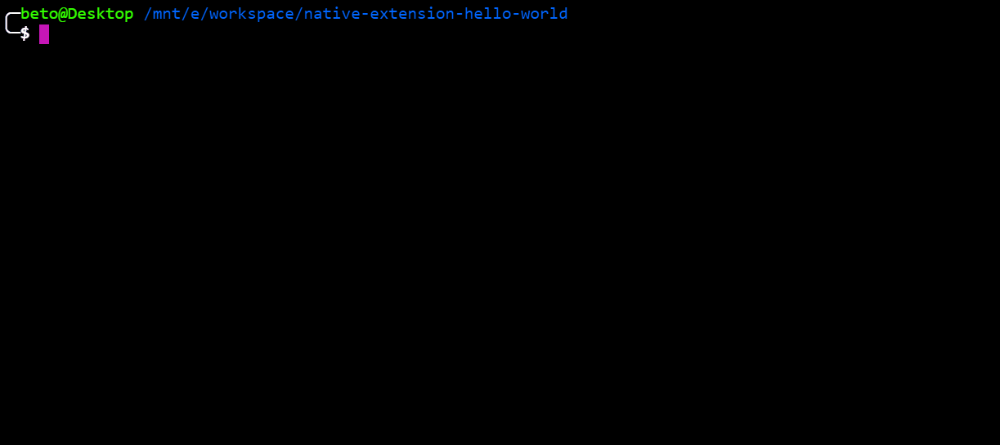

Native Extension for Node.js
https://www.nan-labs.com/blog/native-extensions-for-nodejs/
If you are a Spanish reader you can read this post in Spanish here: Extensiones Nativas: ¿dónde empezar?
In this article we will talk about the most important concepts to develop native extensions for NodeJS. Later, I will show how to build our first native extension with a practical example. And finally, I will leave some links to read more about it.
The basics to get started with native extensions
In simple terms, we can say that a native extension is a set of C++ implemented logic that can be invoked from JavaScript code.
At this point, it’s interesting for us to clarify how NodeJS works and which are the parts involved in it. It’s important to know why we can talk about two languages (JavaScript & C++) under the NodeJS context.
I like to explain it this way:
- JavaScript: it’s the coding language.
- V8: it’s the engine that runs our JavaScript code.
- Libuv: it’s a C library that provides us with asynchronous execution.
Now, where can we place native extensions? I will choose write/read disk action as an example to explain it. Neither JavaScript nor V8 provides us with disk access. Libuv provides asynchronous execution. But, with NodeJS we can write/read to disk, right? Well, this is the point where native extensions get into the match. The fs module is implemented using C++ (it has disk access) and eventually exposes methods (like writeFile and readFile) which can be invoked from JavaScript.

Once we have learned this, we can start taking our first steps in native extensions. Let’s talk about the tools we need.
Basic tooling to build a native extension
Binding.gyp file
This file allows us to specify how we need to compile our native extension. One of the main thing that we need to define are the files that will be compiled and how we will call the final binary. It has a JSON like structure, and the keys to get this configured are sources and target.
Node-gyp
It’s the tool that allows us to compile our native extension. It’s implemented in NodeJS and it’s bundled with npm so we can just run npm install and that will compile our native extension. When we run npm install, it will detect our binding.gyp file included in our root folder and then it will start compiling.
Also, it allows us to make release(default) or debug builds. As a result, a binary file with .node extension will be created inside a release or debug folder, depending on how it was configured.
Bindings
It’s a NodeJS package which allows us to export our native extension. It’s in charge of searching in a build or release folder for us.
N-API
It’s C API that allows us to interact with our engine in a completely abstract way. For me, it’s the result of an evolution that tries to port node to different architectures.
N-API provides stability and compatibility between different node versions. That is, if my native extension is compiled to node 8.1, I don’t need to compile it again for node 8.6 or 9.3. Thus making the life of the maintainers and contributors easier.
At this moment, N-API is under experimental state.
Node addon api
This NodeJS module provides us with a C++ implementation of N-API and allows us to use the language advantages.
First steps in the native extension world
Note: For this example, I used node 9.3.
To get initiated on the native extension world we will use the classic hello world example. The idea is to not overload the code with extra logic so we can focus on the minimum necessary code.
We start initializing npm so that we can then install our dependencies:
npm init
Now, as we said, we install our dependencies:
npm i node-addon-api bindings
At this point we need to create our C file with our logic:
#include <napi.h>
Napi::String SayHi(const Napi::CallbackInfo& info) {
Napi::Env env = info.Env();
return Napi::String::New(env, "Hi!");
}
Napi::Object init(Napi::Env env, Napi::Object exports) {
exports.Set(Napi::String::New(env, "sayHi"), Napi::Function::New(env, SayHi));
return exports;
};
NODE_API_MODULE(hello_world, init);
view raw hello_world.cc hosted with ❤ by GitHub
This file has three important parts that will be explained from bottom to top:
- NODE_API_MODULE (Line 14): The first argument is the native extension name and the second one is the name of the function that initializes our extension.
- Init (Line 10): This is the function that will initialize our native extension. In this function we must export the functions that will be invoked from JavaScript code. To do this, we need to set the name of the function to the exports object and the function itself that will be invoked. This init function must return the exports object.
- SayHi (Line 3): This function is what will be executed when we invoke our native extension from our JavaScript.
Later, we need to create our binding.gyp file that will contain our native extension configuration:
{
"targets": [
{
"cflags!": [ "-fno-exceptions" ],
"cflags_cc!": [ "-fno-exceptions" ],
"include_dirs" : [
"<!@(node -p \"require('node-addon-api').include\")"
],
"target_name": "hello_world",
"sources": [ "hello_world.cc" ],
'defines': [ 'NAPI_DISABLE_CPP_EXCEPTIONS' ]
}
]
}
view raw binding.gyp hosted with ❤ by GitHub
Finally, the JavaScript code that will require our extension and invoke it.
const hello_world = require('bindings')('hello_world')
console.log(hello_world.sayHi());
Now, we just need to compile our extension running npm install and run the JavaScript file that is used:

And that’s it. We just run our native extension.
What we had before N-API?
I find it important to know the context and history of native extensions since it gives access to a lot of documentation and examples. The idea is for N-API to eventually replace NAN. For that reason we should look back to NAN for a moment.
NAN? Yes, Native Abstraction for Node.js. NAN is a C++ library that provides us with V8 abstraction, but it doesn’t allow us to abstract ourselves from the V8.
In new NodeJS releases, there could be V8 changes that could break our native extension. Using NAN is a way to avoid this problem.
Further steps to develop your native extensions
As I said, knowing about NAN allows us to learn from its examples and documentation. It’s a good complement to our native extension learning process.
- NAPI examples can be found in here.
- Node-addon-api examples can be found in here.
- Nan examples can be found in here.
- Another good source are tests here.
- To learn more about native extensions here.
Conclusion
Learning about native extensions helped me to understand how NodeJS works and how it’s composed. There are more than one scenario where we can use them, such as performance boosts, C/C++ library integrations, or integration with legacy code.
In summary, it’s an excellent way to learn about NodeJS internals.
If you have any doubt, please post a comment and I will help you.
Taking part in the community
I made this post for a contribution to LaPlataJS. It’s a local JavaScript community where I participate helping with talks, events organization, or posts. I think that whenever you can you should join a community. For me, it has a lot of benefits. You can know really good people, share ideas, learn things and, sometimes, go for a beer with your folks.
Advanced Node.js Project Structure Tutorial
https://blog.codeship.com/advanced-node-js-project-structure-tutorial/
This article was originally published on the RisingStack blog by András Tóth. With their kind permission, we’re sharing it here for Codeship readers.
Project structuring is an important topic because the way you bootstrap your application can determine the whole development experience throughout the life of the project.
In this Node.js project structure tutorial I’ll answer some of the most common questions we receive at RisingStack about structuring advanced Node applications, and help you with structuring a complex project.
These are the goals that we are aiming for:
- Writing an application that is easy to scale and maintain.
- The config is well separated from the business logic.
- Our application can consist of multiple process types.
Node.js at Scale is a collection of articles focusing on the needs of companies with bigger Node.js installations and advanced Node developers.
The Node.js Project Structure
Our example application is listening on Twitter tweets and tracks certain keywords. In case of a keyword match, the tweet will be sent to a RabbitMQ queue, which will be processed and saved to Redis. We will also have a REST API exposing the tweets we have saved.
You can take a look at the code on GitHub. The file structure for this project looks like the following:
.
|-- config
| |-- components
| | |-- common.js
| | |-- logger.js
| | |-- rabbitmq.js
| | |-- redis.js
| | |-- server.js
| | `-- twitter.js
| |-- index.js
| |-- social-preprocessor-worker.js
| |-- twitter-stream-worker.js
| `-- web.js
|-- models
| |-- redis
| | |-- index.js
| | `-- redis.js
| |-- tortoise
| | |-- index.js
| | `-- tortoise.js
| `-- twitter
| |-- index.js
| `-- twitter.js
|-- scripts
|-- test
| `-- setup.js
|-- web
| |-- middleware
| | |-- index.js
| | `-- parseQuery.js
| |-- router
| | |-- api
| | | |-- tweets
| | | | |-- get.js
| | | | |-- get.spec.js
| | | | `-- index.js
| | | `-- index.js
| | `-- index.js
| |-- index.js
| `-- server.js
|-- worker
| |-- social-preprocessor
| | |-- index.js
| | `-- worker.js
| `-- twitter-stream
| |-- index.js
| `-- worker.js
|-- index.js
`-- package.json
In this example we have 3 processes:
-
twitter-stream-worker: The process is listening on Twitter for keywords and sends the tweets to a RabbitMQ queue. -
social-preprocessor-worker: The process is listening on the RabbitMQ queue and saves the tweets to Redis and removes old ones. -
web: The process is serving a REST API with a single endpoint:GET /api/v1/tweets?limit&offset.
We will get to what differentiates a web and a worker process, but let’s start with the config.
How to handle different environments and configurations
Load your deployment specific configurations from environment variables and never add them to the codebase as constants. These are the configurations that can vary between deployments and runtime environments, like CI, staging or production. Basically, you can have the same code running everywhere.
A good test for whether the config is correctly separated from the application internals is that the codebase could be made public at any moment. This means that you can be protected from accidentally leaking secrets or compromising credentials on version control.
A config is properly separated from an app’s internals if the code could go public at any moment.
The environment variables can be accessed via the process.env object. Keep in mind that all the values have a type of String, so you might need to use type conversions.
// config/config.js
'use strict'
// required environment variables
[
'NODE_ENV',
'PORT'
].forEach((name) => {
if (!process.env[name]) {
throw new Error(`Environment variable ${name} is missing`)
}
})
const config = {
env: process.env.NODE_ENV,
logger: {
level: process.env.LOG_LEVEL || 'info',
enabled: process.env.BOOLEAN ? process.env.BOOLEAN.toLowerCase() === 'true' : false
},
server: {
port: Number(process.env.PORT)
}
// ...
}
module.exports = config
Config validation
Validating environment variables is also a quite useful technique. It can help you catching configuration errors on startup before your application does anything else. You can read more about the benefits of early error detection of configurations by Adrian Colyer in this blog post.
This is how our improved config file looks like with schema validation using the joi validator:
// config/config.js
'use strict'
const joi = require('joi')
const envVarsSchema = joi.object({
NODE_ENV: joi.string()
.allow(['development', 'production', 'test', 'provision'])
.required(),
PORT: joi.number()
.required(),
LOGGER_LEVEL: joi.string()
.allow(['error', 'warn', 'info', 'verbose', 'debug', 'silly'])
.default('info'),
LOGGER_ENABLED: joi.boolean()
.truthy('TRUE')
.truthy('true')
.falsy('FALSE')
.falsy('false')
.default(true)
}).unknown()
.required()
const { error, value: envVars } = joi.validate(process.env, envVarsSchema)
if (error) {
throw new Error(`Config validation error: ${error.message}`)
}
const config = {
env: envVars.NODE_ENV,
isTest: envVars.NODE_ENV === 'test',
isDevelopment: envVars.NODE_ENV === 'development',
logger: {
level: envVars.LOGGER_LEVEL,
enabled: envVars.LOGGER_ENABLED
},
server: {
port: envVars.PORT
}
// ...
}
module.exports = config
Config splitting
Splitting the configuration by components can be a good solution to forego a single, growing config file.
// config/components/logger.js
'use strict'
const joi = require('joi')
const envVarsSchema = joi.object({
LOGGER_LEVEL: joi.string()
.allow(['error', 'warn', 'info', 'verbose', 'debug', 'silly'])
.default('info'),
LOGGER_ENABLED: joi.boolean()
.truthy('TRUE')
.truthy('true')
.falsy('FALSE')
.falsy('false')
.default(true)
}).unknown()
.required()
const { error, value: envVars } = joi.validate(process.env, envVarsSchema)
if (error) {
throw new Error(`Config validation error: ${error.message}`)
}
const config = {
logger: {
level: envVars.LOGGER_LEVEL,
enabled: envVars.LOGGER_ENABLED
}
}
module.exports = config
Then in the config.js file, we only need to combine the components.
// config/config.js
'use strict'
const common = require('./components/common')
const logger = require('./components/logger')
const redis = require('./components/redis')
const server = require('./components/server')
module.exports = Object.assign({}, common, logger, redis, server)
You should never group your config together into “environment” specific files, like config/production.js for production. It doesn’t scale well as your app expands into more deployments over time.
Never group your config together into environment specific files. It doesn’t scale well!
How to organize a multi-process application
The process is the main building block of a modern application. An app can have multiple stateless processes, just like in our example. HTTP requests can be handled by a web process and long-running or scheduled background tasks by a worker. They are stateless, because any data that needs to be persisted is stored in a stateful database. For this reason, adding more concurrent processes are very simple. These processes can be independently scaled based on the load or other metrics.
In the previous section, we saw how to break down the config into components. This comes very handy when having different process types. Each type can have its own config only requiring the components it needs, without expecting unused environment variables.
In the config/index.js file:
// config/index.js
'use strict'
const processType = process.env.PROCESS_TYPE
let config
try {
config = require(`./${processType}`)
} catch (ex) {
if (ex.code === 'MODULE_NOT_FOUND') {
throw new Error(`No config for process type: ${processType}`)
}
throw ex
}
module.exports = config
In the root index.js file, we start the process selected with the PROCESS_TYPE environment variable:
// index.js
'use strict'
const processType = process.env.PROCESS_TYPE
if (processType === 'web') {
require('./web')
} else if (processType === 'twitter-stream-worker') {
require('./worker/twitter-stream')
} else if (processType === 'social-preprocessor-worker') {
require('./worker/social-preprocessor')
} else {
throw new Error(`${processType} is an unsupported process type. Use one of: 'web', 'twitter-stream-worker', 'social-preprocessor-worker'!`)
}
The nice thing about this is that we still got one application, but we have managed to split it into multiple, independent processes. Each of them can be started and scaled individually, without influencing the other parts. You can achieve this without sacrificing your DRY codebase, because parts of the code, like the models, can be shared between the different processes.
How to organize your test files
Place your test files next to the tested modules using some kind of naming convention, like <module_name>.spec.js and </module_name><module_name>.e2e.spec.js. Your tests should live together with the tested modules, keeping them in sync. It would be really hard to find and maintain the tests and the corresponding functionality when the test files are completely separated from the business logic.
Place your test files next to the tested modules using some kind of naming convention.
A separated /test folder can hold all the additional test setup and utilities not used by the application itself.
Where to put your build and script files
We tend to create a /scripts folder where we put our bash and node scripts for database synchronization, front-end builds and so on. This folder separates them from your application code and prevents you from putting too many script files into the root directory. List them in your npm scripts for easier usage.
Conclusion
I hope you enjoyed this article on project structuring. I highly recommend to check out our previous article on the subject, where we laid out the 5 fundamentals of Node.js project structuring.
If you have any questions, please let me know in the comments. In the next chapter of the Node.js at Scale series, we’re going to dive deep into JavaScript clean coding.
Copyright © 2015 Powered by MWeb, Theme used GitHub CSS.